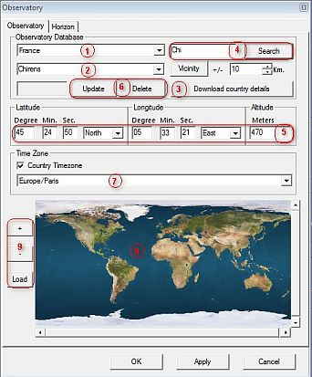
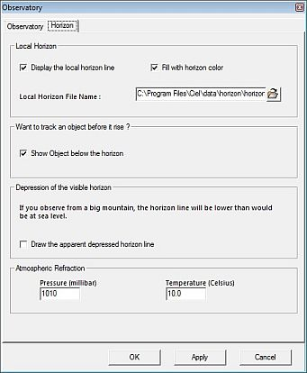

Configuració de l'observatori
Aquesta caixa de diàleg pot activar-se des del menú amb: Configuració → Observatori, per la icona  en la barra esquerra, o per Configuració → Totes les opcions de configuració → Totes les opcions de configuració.
en la barra esquerra, o per Configuració → Totes les opcions de configuració → Totes les opcions de configuració.
La configuració de l'observatori té dues pestanyes:
Per a una adequada presentació d'objectes en el mapa, no oblideu de comprovar la configuració de ladata/time.
Observatori
 Definiu la situació del lloc d'observació a usar quan calculeu l'altura i l'azimut dels objectes en el mapa.
{kind=link}
- Seleccioneu un país (1)
- Seleccioneu un lloc (2)
- Per ampliar les possibilitats de selecció, podeu descarregar (3) un fitxer molt complet del país.
- També podeu cercar el vostre lloc amb un filtre a “busca” (4) i seleccionar-lo en la llista (2).
- Podeu provar d'afinar fent clic a “Veïnatge” i els kms de l'entorn.
- Podeu afegir, modificar o suprimir un lloc amb els botons “Posa al dia” o “Suprimeix” (6). Per afegir un lloc, entreu el nom a la llista (2), les coordenades (5) i altitud (en metres) i feu clic a “Posa al dia”. No oblideu de comprovar la zona horària (7).
- Si no sabeu les coordenades del vostre observatori feu clic en el mapa del món (8) i seleccioneu el lloc amb el ratolí. Podeu fer zoom o canviar el mapa per un altre del vostre gust (9), l'única restricció és la de mantenir el mateix sistema de projecció.
És important que trieu bé la vostra zona horària, de cara a calcular la diferència amb el TU i l'estalvi de llum diürna. Això és bàsic per a un mapa correcte i per al càlcul de les efemèrides.
Horitzó

Qun useu les coordenades altazimutals, podeu mostrar l'horitzó local com una línia o com una superfície. Per recordar com canviar el sistema de coordenades feu clic aquí.
Podeu usar un fitxer de l'horitzó local indicant el camí d'on es troba.
{kind=link}
Com preparar el fitxer del vostre horitzó local
Per descriure el vostre horitzó local, amb la forma i posició aproximats de muntanyes, arbres, edificis etc., podeu escriure un fitxer molt senzill amb un simple editor de text ASCII (com ara el WordPad, Vi, Metapad, Pspad o d'altres -no useu el Word-) per definir-lo. A tall d'exemple podeu obrir i examinar el fitxer de mostra que incorpora el programa [directori d'instal·lació]/data/horizon/horizon_Geneve.txt. Com podeu veure l'horitzó està definit per una sèrie de línies amb parelles de valors i alguns comentaris intercalats precedits del signe #. El primer dels dos valors de cada línia és l'azimut que ha d'ésser un nombre enter de graus entre 0 i 360, i el segon valor, que pot contenir decimals, és l'altura també en graus. L'origen 0 dels azimuts és el nord, 90 l'est, 180 el sud i 270 l'oest. L'altura 0 és l'horitzó a nivell de superfície i 90 és el zenit. Un punt (.) pot ser usat com a separador decimal en els valors de l'altura. Els azimuts i altures intermigs no definits seran interpolats automàticament al dibuixar l'horitzó en el mapa entre els que sí que estiguin definits. I tot comentari que intercaleu ha de sér en línia exclusiva precedida pel signe (#).
Les altres possibilitats
Les altres possibilitats són òbvies amb la descripció.
* Si voleu podeu mostrar els objectes de sota l'horitzó.
* També podeu simular una línia d'horitzó deprimida en el cas que observeu des d'una muntanya prou alta.
Per permetre a Cartes del Cel que calculi i apliqui la correcció per refracció atmosfèrica, heu d'indicar la pressió atmosfèrica i la temperatura locals.